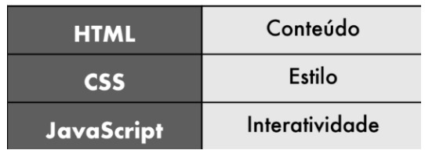

Pode ser estranho se ler "a HTML" ou "as CSS" .É comum tratar essas duas tecnologias com o artigo masculino. Mas na verdade isso não está totalmente errado, porém a gente considera a definição pela tradução dos termos. HTML é uma Linguagem de Marcação Hipertexto, já as CSS são as Folhas de Estilo em Cascata, ambos os termos são femininos. Além disso, vamos ter outras novidades sobre elas.
Pessoas iniciantes ou que se baseiam na capa de um único livro
da série Head First, que estampa na capa
"Programação em HTML5"
A própria sigla já entrega seu
objetivo: Hypertext Markup Language
traduzido para o Português significa
Linguagem de Marcação Hipertexto. Ela
não funciona com instruções, como
toda linguagem de programação. A
HTML é baseada em marcações
chamadas tags, e elas comandam tudo.
O termo “programação” envolve estruturas especializadas que
dependem do uso de variáveis simples e compostas, condições,
laços e até coisas mais complexas como objetos. Nada disso
existe na HTML nem nas CSS. Todas essas características estão
presentes na linguagem JavaScript. Essa sim é uma Linguagem de
Programação.
HTML trabalha fundamentada apenas nas marcas ou etiquetas
e as CSS funcionam baseadas nos seletores, propriedades e
valores.
Basicamente temos um panorama simples:
Uma tag é um conjunto de palavras entre sinais de colchete angular
A maioria das tags possuem uma abertura e um fechamento <p>, e
identificamos isso pela presença da barra no fechamento da tag. </p>
As tags também podem ter atributos e valores, que vão
configurar seu comportamento. Uma mesma tag pode ter vários parâmetros, cada um com seu
valor. Entretanto, algumas tags não possuem a necessidade de
conteúdo interno e por isso não possuem fechamento.
Com o surgimento da versão 5 da HTML, algumas tags deixaram de existir ou tornaram-se obsoletas. A W3C recomenda que elas não sejam mais usadas pelos profissionais e aos poucos não serão mais suportadas pelos navegadores nas suas futuras versões.